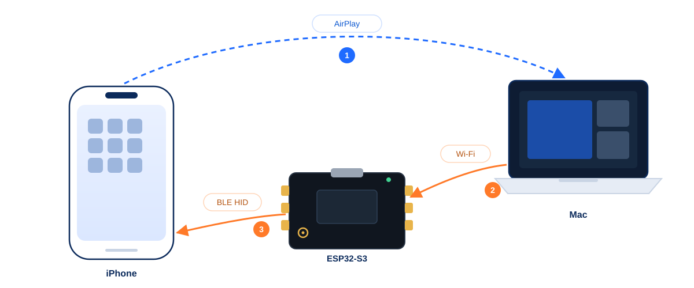
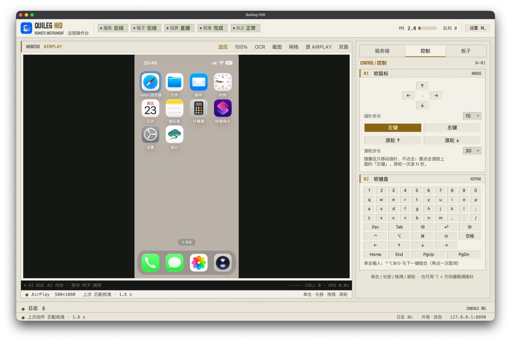
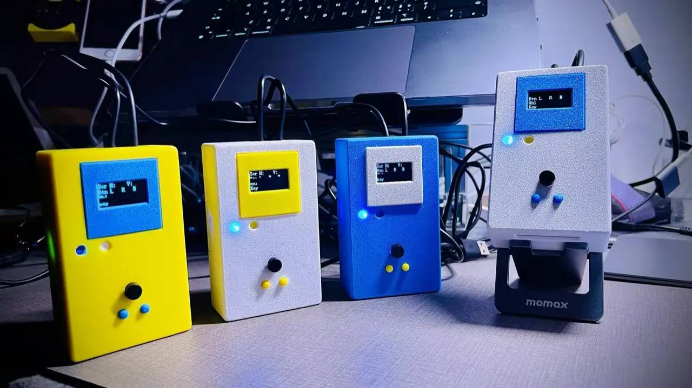

Let AI actually use your iPhone
Quileg HID gives your AI assistant eyes on the screen and hands on the interface — using your phone the way a person does, not through an API.
Before you start: Quileg HID needs an ESP32-S3 development board (around US$4–9, 16MB flash required). Verified working: Seeed XIAO ESP32S3 Plus, and third-party boards built on the ESP32-S3-WROOM-1-N16R8 module. The board impersonates a Bluetooth keyboard and mouse and does the actual tapping. Without it, the app cannot control a phone.
What you can do
Anything you could do by hand on the screen, the assistant can do too.
Apps without APIs
If it can be tapped, it can be automated — no SDK, no partner access, no reverse engineering.
Repetitive work
Describe the routine once, then let it run: tapping, filling, paging, copying.
Verified at every step
Each action is followed by a fresh screenshot, so a missed tap is caught instead of compounding.
Full keyboard control
Letters, symbols, function keys and modifier combinations, with CJK input via pinyin and candidate taps.
Not just iPhone
iOS and iPadOS go over AirPlay. Android, Windows and macOS need a UVC capture card. Key policy follows the target platform.
Local by design
The control service binds to 127.0.0.1:8890. Screen data never leaves your Mac.
How the AI drives it
No scripting, no coordinate math. Hand the DMG (the downloaded installer) to your AI: it installs the app, reads the bundled documents, wires up the connection — then it can see the screen, tap buttons and type. You talk, it taps.
Three steps to start
- Hand the DMG to your AI — or download it and drag it to Applications yourself
- Let it read
START-HERE.mdfrom the image - Connect the device using the list below, then say: "Is the phone connected?"
An AI with local file access (Claude Code, Cursor, DSH) can mount the DMG, install the app, verify the signature and version, read all 7 documents and wire up the connection — you only approve the key steps.
A chat-only AI (Claude Desktop) cannot read local files, so install once yourself; after that it drives the phone over MCP. The service binds to 127.0.0.1:8890 only — never expose it. Read the docs online →
Scenario: put one line into the phone's Notes
Every step is checked against a fresh look at the screen, so a missed tap is caught instead of compounding.
Connect the phone: these steps are yours to do
- Turn on AssistiveTouchiPhone Settings → Accessibility → Touch → AssistiveTouch. Without it there is no pointer, and every tap looks like nothing happened.
- Turn off "Use Primary Keyboard"Same screen → Pointer Devices → Mouse Keys. When it is on, the keyboard acts as a mouse and some characters never land.
- Mirror to this MacControl Center → Screen Mirroring → your Mac.
- Power the board and join Wi-FiConnect it over USB, flash the firmware and configure Wi-Fi in the app. If the board has an external antenna, attach it.
When all four are done, say "Is the phone connected?" — the AI checks each item and tells you what is missing.
32 tools in four groups
See
Capture the screen, read its text, detect orientation, and get clickable coordinates.
screenshot · ocr · orientation · click_text
Act
Tap, hold, drag, page, type, and press key combinations.
click · long_press · drag · scroll · type_text · key
Speak
Mac speech plus phone dictation for CJK input, and UI sound effects.
speak · dictation · play_audio
Calibrate & diagnose
Request calibration, read state and logs, check whether a shortcut is allowed.
calibration_request · app_status · app_logs · keymap_check
How it works
Three parts doing three simple jobs.

See
Mirror the iPhone to your Mac with the built-in Screen Mirroring. The app turns frames into images the model can reason about.
Act
The ESP32-S3 pairs as a standard Bluetooth keyboard and mouse, and performs the taps and keystrokes the Mac sends it.
Orchestrate
A local control service exposes the device to your AI over MCP: look, tap, look again. Every action is verified.
Console

The live phone screen on the left, control and device panels on the right
Three generations
One idea throughout: make a device act as a standard keyboard and mouse. The first two generations were built on STM32 as wired devices plugged into a computer; the third moved to the ESP32-S3 and Bluetooth, and to a phone. Neither of the first two was released publicly.
-
First
July 2024
Quileg programmable HID simulator
A standalone STM32 device that runs your scripted routines as a keyboard and mouse. Built in several enclosure colours (photo below). Never released; project page
-
Second
July 2025
Multi-device chaining
Still STM32, but now several units can be chained or run in parallel. Never released.
-
Third · current
2026 – present
Quileg HID
Switched to the ESP32-S3 and Bluetooth, so no cable is needed. The target moved from a computer to a phone: mirror the screen, act with keyboard and mouse, let an AI drive the iPhone.

Get started
About 30–40 minutes from unboxing to first tap — around 13 of those are the one-time calibration. After that it only needs redoing if the phone, resolution, pointer size, video source or orientation changes.
Get a board
Any ESP32-S3 with 16MB flash. If it has an external antenna connector, connect the antenna — Wi-Fi is unusable without it.
Install and flash
Download the DMG, drag the app into Applications, connect the board over USB and flash the firmware from inside the app.
Mirror, calibrate, go
Open Control Center → Screen Mirroring → choose your Mac. On the iPhone, turn on AssistiveTouch (Settings → Accessibility → Touch) and make sure Pointer Devices → Mouse Keys → Use Primary Keyboard is off. Then run the calibration once in the app.
Requirements
| macOS | 13.0 (Ventura) or later |
|---|---|
| Processor | Apple Silicon (M1–M4) or Intel Mac (macOS 13–26). Two separate downloads: use -arm64 on Apple chips, -intel on Intel Macs |
| Hardware | ESP32-S3 dev board, 16MB flash. Verified: Seeed XIAO ESP32S3 Plus; third-party boards with the ESP32-S3-WROOM-1-N16R8 module (some batches ship XMC flash — test before relying on it) |
| Network | Mac and board on the same 2.4GHz LAN |
| Target devices | iPhone / iPad (Screen Mirroring); Android / Windows / macOS (requires a UVC capture card) |
| Price | Free |
Technical notes
Local control API and MCP
The app serves HTTP on 8890; the GUI, the control layer and MCP share it.
curl -s http://127.0.0.1:8890/api/status32 MCP tools cover status, screenshots, taps, typing, scrolling, dragging, key presses, calibration and speech.
Why calibration takes 13 minutes
A Bluetooth mouse sends relative motion, but an assistant needs to hit a specific button. Calibration records the four corner stops, a per-axis mapping table for each corner, the end-to-end latency and a verification pass, and saves a profile keyed by source:resolution (e.g. airplay:500x1080). It only needs repeating when the phone, mirroring resolution, pointer size, video source (AirPlay ↔ UVC) or orientation changes — not when the board changes. AirPlay and UVC each need their own calibration.
Third-party components
- esp32-iphone-agent (MIT) — board-side control service
- UxPlay (GPL-3.0) — AirPlay receiver
The app itself is closed source. Corresponding source for the GPL-3.0 components is published with every release.
Code signing and verification
Every build is signed with a Developer ID certificate, notarized by Apple, and the notarization ticket is stapled into the bundle, so the first launch works offline.
shasum -a 256 Quileg-HID-<version>.dmgCompare against the SHA-256 published on the releases page.
FAQ
Why is the board required?
iOS gives no software the ability to synthesize touch input. The only way in is real Bluetooth HID events from an external device — which is exactly what the ESP32-S3 does. That is also why no jailbreak and no app install are needed.
Can this get my account banned?
From the device's point of view the input is indistinguishable from a human using a keyboard and mouse. Still, only use this on devices and accounts you are authorized to operate, and follow each platform's terms of service.
Intel Mac support?
Yes — download the Intel build (file name ends with -intel.dmg). It matches the Apple Silicon build feature-for-feature and is signed and notarized. Note that macOS 26 is the last release for Intel Macs.
On iPad the pointer hitting the top edge looks like a lock screen?
It is not a lock. On iPadOS 26, moving the pointer to the top edge pulls down Notification Center (left half) or
Control Center (right half) — a full-screen clock that looks exactly like the lock screen. Press Esc
or click empty space to dismiss it.
Since 0.9.33 the app parks the pointer from the bottom edge instead, so it never touches the top edge. After upgrading, run the calibration once more. Keep the device untouched during calibration and set Auto-Lock to Never.
Do I install anything on the phone?
No. No app, no developer mode, no jailbreak — just the built-in Screen Mirroring.
Is my screen uploaded anywhere?
No. Mirroring, frame processing and control all happen locally, and the service binds to 127.0.0.1. Whether screenshots reach an AI model depends on the AI tool you choose.
Documentation
Shipped inside the installer and kept in sync with every release. Written in Chinese for now.
Install & first run 中文
Drag to Applications, flash the board, mirror the phone, calibrate once.
Features & settings 中文
Where every panel and switch lives, and what to check first.
Connect an AI (MCP) 中文
Expose 32 tools to Claude, Codex and other MCP hosts.
Troubleshooting 中文
Pitfalls we actually hit, the device compatibility matrix, known issues.
Let the assistant tap for you
Free to download. No account required. All you need is an ESP32-S3.